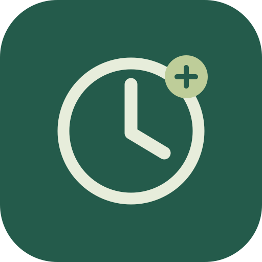

看见空闲，安排日常，也记得留一点时间给自己。
迁移链接含计划内容，请勿转发；新版读取后会立即移除地址中的临时内容。
先设置起床、睡觉和固定安排，下面的空闲时间才属于你。
一天的节奏，由你决定
先把任务记下来，找到合适的空档再安排。
会保留新网站已有内容，相同任务以新网站为准。执行记录会一并合并，重复迁移不会重复添加。
跨午夜的安排请分成两条；睡眠时间请在作息设置中修改。
立即计时；结束后记录实际起止时间，并在清单中划线保留。
先划出一天的边界，再慢慢填入固定安排。
00:00 表示当天午夜。凌晨入睡的作息可先将边界设为 00:00。
数据保存在当前浏览器，不会自动跨设备同步。更换设备或清理浏览器前，请先导出备份。

像打开一个 App 一样，打开属于你的时间。
用 Safari 打开本站 → 点「分享」→「添加到主屏幕」→「添加」。
用 Chrome 打开本站 → 右上角菜单 →「安装应用」或「添加到主屏幕」。
请在正式 HTTPS 网页中操作。首次联网打开后可离线使用；桌面模式若没有原浏览器的数据，可通过导出 / 导入迁移。